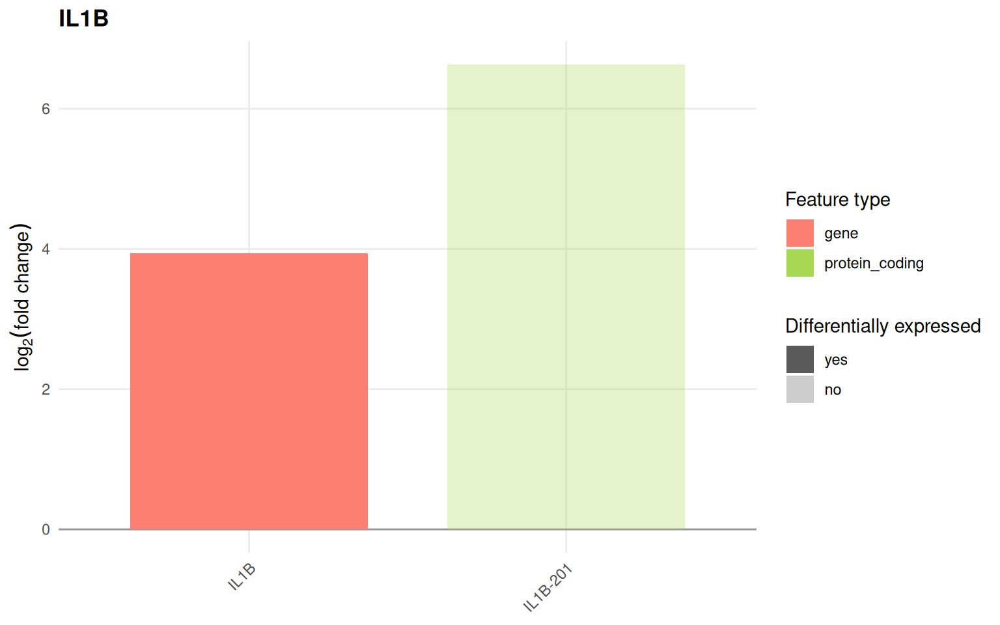
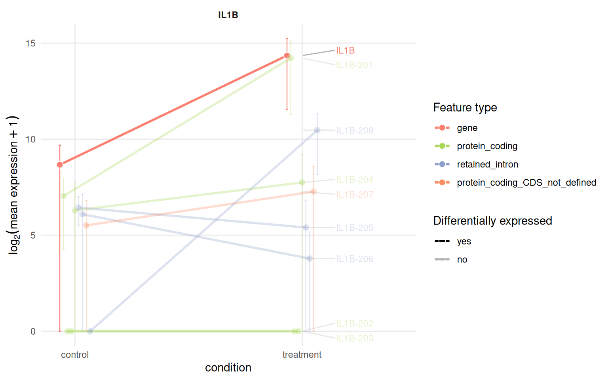
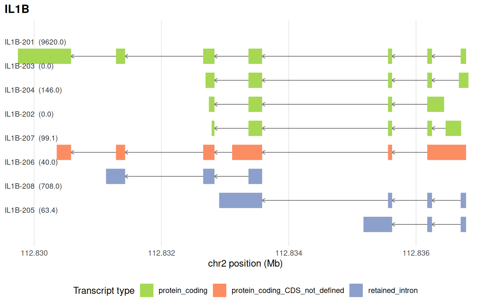

library(isoformic)
tx_fasta <- download_reference(version = "49", file_type = "fasta")
gff_path <- download_reference(version = "49", file_type = "gff")
salmon_index(fasta_path = tx_fasta, index_path = "salmon_index", is_gencode = TRUE, num_threads = 8)
salmon_quant(
input_r1 = "sample_1.fastq.gz",
input_r2 = "sample_2.fastq.gz",
index_path = "salmon_index",
output_dir = "quants/sample_quant",
num_threads = 8
)From Salmon quantifications to an IsoformicExperiment
October 2, 2025
Source:vignettes/articles/isoformic-preprocess.qmd
This article goes from FASTQ files to an IsoformicExperiment with transcript-level and gene-level differential expression results. The introduction starts one step later, from ready-made tables, and the other articles analyse the object.
Quantifying with Salmon
We recommend Salmon (Patro et al. 2017) in selective-alignment mode against the GENCODE transcriptome, with inferential replicates so that swish (Zhu et al. 2019) can be used for transcript-level differential expression.
Salmon 2 is a from-scratch rewrite in Rust (2.8.0 at the time of writing). The workflow (salmon index, salmon quant, quant.sf) and the output files are the same, so read_salmon(), tximeta, tximport and swish work unchanged, but the index format is new: an index built with Salmon 1.x is rejected and must be rebuilt (the last C++ release, 1.12.0, remains available as the salmon-cpp conda package). Other changes worth knowing: selective alignment is the only mapping mode (--validateMappings is a no-op), quantification is deterministic by default (identical output for any thread count), decoy sequences no longer appear in quant.sf, and --ignoreTxVersion matches transcript identifiers without their version suffix when a gene map is given. The Salmon migration guide lists every removed or ignored option.
A typical single-sample invocation from a shell is below: --libType A detects the library type, the index is built from the GENCODE transcript FASTA with salmon index --gencode (which truncates the transcript names at the first |), --posBias --seqBias --gcBias correct the biases, --dumpEq --dumpEqWeights keep the equivalence classes and --numGibbsSamples writes the inferential replicates that swish needs into aux_info/bootstrap/.
salmon index \
--transcripts gencode.v49.transcripts.fa.gz \
--index salmon_index \
--gencode \
--threads 8
salmon quant \
--libType A \
--index salmon_index \
--mates1 /path/SRR..._1.fastq.gz \
--mates2 /path/SRR..._2.fastq.gz \
--output /path/SRR..._quant \
--threads 8 \
--allowDovetail --softclipOverhangs \
--dumpEq --dumpEqWeights \
--posBias --seqBias --gcBias \
--numGibbsSamples 30The same can be driven from R through the condathis package, which installs Salmon from Bioconda into a conda environment (Linux and macOS, or WSL2 on Windows). salmon_index() and salmon_quant() run the commands above; the first call creates the environment with Salmon 2.8.0:
salmon_quant() draws 30 Gibbs samples per sample by default (num_gibbs = 0 skips them). Besides swish, they quantify how well the reads determine each isoform, which isoforms cannot be told apart and how confident each differential expression call is; read_salmon(inferential = TRUE) reads them and the uncertainty article explains how to use and report them.
For a decoy-aware index (recommended by the Salmon authors), build the gentrome FASTA and decoys.txt from the genome as described in the Salmon documentation and pass --decoys decoys.txt to salmon index.
Reading quantifications directly
read_salmon() reads any number of quant.sf files with DuckDB and returns an IsoformicExperiment with abundance (TPM), counts and length assays. The package ships a down-sampled dataset of six placenta samples quantified against GENCODE v49.
library(isoformic)
quants_dir <- fs::path_package("isoformic", "extdata", "mini_quants")
quant_dirs <- fs::dir_ls(quants_dir, type = "directory")
names(quant_dirs) <- sub("_quant$", "", fs::path_file(quant_dirs))
col_data <- tibble::tibble(
sample_id = names(quant_dirs),
condition = factor(c(rep("control", 3), rep("treatment", 3)), levels = c("control", "treatment"))
)
col_data
#> # A tibble: 6 × 2
#> sample_id condition
#> <chr> <fct>
#> 1 SRR11498039 control
#> 2 SRR11498040 control
#> 3 SRR11498041 control
#> 4 SRR11498079 treatment
#> 5 SRR11498080 treatment
#> 6 SRR11498081 treatmentThe annotation must match the reference used for quantification, GENCODE v49 here. For real data it is downloaded once into the package cache and converted to Parquet once:
gff_path <- download_reference(version = "49", file_type = "gff")
annot_dir <- prepare_isoformic_annotation(gff_path)The package bundles the subset of that annotation covering the transcripts of the mini dataset.
annot_dir <- fs::path_package("isoformic", "extdata", "mini_annotation")
iso <- read_salmon(quant_dirs, annot_path = annot_dir, col_data = col_data, experiment_name = "mini_placenta")
iso
#> <IsoformicExperiment> mini_placenta
#> annotation : gencode_v49_mini_subset (15 genes, 111 transcripts, 1,071 exons)
#> samples : 6 [condition]
#> transcripts: 111 assayed from 15 genes
#> assays : abundance, counts, length
#> gene assays: derived from transcript assays on demand
#> DE results : <none>
assay_names(iso)
#> [1] "abundance" "counts" "length"
head(row_data(iso))
#> # A tibble: 6 × 19
#> transcript_id transcript_name transcript_type gene_id gene_name gene_type
#> <chr> <chr> <chr> <chr> <chr> <chr>
#> 1 ENST00000216797.10 NFKBIA-201 protein_coding ENSG00… NFKBIA protein_…
#> 2 ENST00000225831.4 CCL2-201 protein_coding ENSG00… CCL2 protein_…
#> 3 ENST00000258743.10 IL6-201 protein_coding ENSG00… IL6 protein_…
#> 4 ENST00000263341.7 IL1B-201 protein_coding ENSG00… IL1B protein_…
#> 5 ENST00000264832.8 ICAM1-201 protein_coding ENSG00… ICAM1 protein_…
#> 6 ENST00000306602.3 CXCL10-201 protein_coding ENSG00… CXCL10 protein_…
#> # ℹ 13 more variables: source_gene_id <chr>, source_transcript_id <chr>,
#> # tags <chr>, coding_status <chr>, transcript_support_level <chr>,
#> # tie_score <dbl>, cds_start <int>, cds_end <int>, cds_length <int>,
#> # is_canonical <lgl>, haplotype <chr>, n_exons <int>, tx_length <int>Transcript-level differential expression with swish
swish needs the inferential replicates, which tximeta imports from the Salmon output (the bundled quantifications carry them separately to keep the package small).
suppressPackageStartupMessages({
library(SummarizedExperiment)
library(fishpond)
})
tximeta_coldata <- data.frame(
files = fs::path(quant_dirs, "quant.sf"),
names = names(quant_dirs),
condition = col_data$condition
)
se_tx <- tximeta::tximeta(
coldata = tximeta_coldata,
type = "salmon",
txOut = TRUE,
skipMeta = TRUE,
useHub = FALSE,
ignoreAfterBar = TRUE,
skipSeqinfo = TRUE
)
mini_draws <- as_inferential_replicates(
read_parquet(fs::path_package("isoformic", "extdata", "mini_draws.parquet"))
)
names(mini_draws) <- paste0("infRep", seq_along(mini_draws))
assays(se_tx) <- c(as.list(assays(se_tx)), mini_draws)
y <- fishpond::scaleInfReps(se_tx)
y <- fishpond::labelKeep(y, minCount = 10, minN = 3)
set.seed(20261029) # swish uses permutations
y <- fishpond::swish(y, x = "condition")
swish_results <- mcols(y) |>
as.data.frame() |>
tibble::rownames_to_column("transcript_id")
head(swish_results)
#> transcript_id log10mean keep stat log2FC pvalue locfdr qvalue
#> 1 ENST00000367468.10 2.923578 TRUE 1.85 1.821603 0.3115385 1 0.5785714
#> 2 ENST00000681605.1 2.553906 FALSE NA NA NA NA NA
#> 3 ENST00000680451.1 2.350137 FALSE NA NA NA NA NA
#> 4 ENST00000490885.6 2.225321 FALSE NA NA NA NA NA
#> 5 ENST00000559627.1 1.959647 FALSE NA NA NA NA NA
#> 6 ENST00000466691.1 1.607356 FALSE NA NA NA NA NAThe results are attached to the object; tximeta objects can also be converted directly with as_isoformic(se_tx, annot_path = annot_dir).
de_tx(iso) <- swish_results
head(de_tx(iso))
#> # A tibble: 6 × 9
#> transcript_id log10mean keep stat log2FC pvalue locfdr qvalue det_sig
#> <chr> <dbl> <lgl> <dbl> <dbl> <dbl> <dbl> <dbl> <chr>
#> 1 ENST00000263341.7 3.59 TRUE 3.25 6.63 0.0727 0.529 0.234 no
#> 2 ENST00000651122.1 2.72 TRUE 3.5 4.91 0.0562 0.455 0.234 no
#> 3 ENST00000306602.3 2.44 TRUE -3.3 -3.75 0.0673 0.506 0.234 no
#> 4 ENST00000392322.7 2.61 TRUE 2.45 2.62 0.157 0.839 0.407 no
#> 5 ENST00000698141.1 2.45 TRUE 2 2.24 0.264 1 0.528 no
#> 6 ENST00000697958.1 2.52 TRUE -3.65 -2.01 0.0423 0.388 0.234 noGene-level differential expression with DESeq2
as_summarized_experiment() exports the gene-level assays (isoforms summed, lengths averaged by abundance) so that DESeq2 can run on them.
se_gene <- as_summarized_experiment(iso, level = "gene")
assay(se_gene, "counts") <- round(assay(se_gene, "counts"))
se_gene$condition <- factor(se_gene$condition, levels = c("control", "treatment"))
dds <- DESeq2::DESeqDataSet(se_gene, design = ~condition)
dds <- dds[rowSums(DESeq2::counts(dds) >= 10) >= 3, ]
dds <- DESeq2::DESeq(dds, quiet = TRUE)
res <- DESeq2::results(dds, contrast = c("condition", "treatment", "control"))
shrink_type <- if (rlang::is_installed("apeglm")) "apeglm" else "normal"
res_shr <- DESeq2::lfcShrink(dds, coef = "condition_treatment_vs_control", res = res, type = shrink_type, quiet = TRUE)
de_gene(iso) <- as.data.frame(res_shr)
head(de_gene(iso))
#> # A tibble: 6 × 7
#> gene_id baseMean log2FC lfcSE pvalue qvalue deg_sig
#> <chr> <dbl> <dbl> <dbl> <dbl> <dbl> <chr>
#> 1 ENSG00000125538.12 140. 3.94 1.55 0.000218 0.00196 yes
#> 2 ENSG00000115415.22 435. 0.00000191 0.00144 0.452 0.614 no
#> 3 ENSG00000100906.13 1212. -0.00000132 0.00144 0.362 0.614 no
#> 4 ENSG00000271503.7 20364. -0.000000869 0.00144 0.477 0.614 no
#> 5 ENSG00000184557.5 241. 0.000000809 0.00144 0.586 0.659 no
#> 6 ENSG00000073756.13 63.9 0.000000600 0.00144 0.438 0.614 no
iso
#> <IsoformicExperiment> mini_placenta
#> annotation : gencode_v49_mini_subset (15 genes, 111 transcripts, 1,071 exons)
#> samples : 6 [condition]
#> transcripts: 111 assayed from 15 genes
#> assays : abundance, counts, length
#> gene assays: derived from transcript assays on demand
#> DE results : det (111 transcripts), deg (12 genes)Looking at the results
top_gene <- de_gene(iso) |>
dplyr::arrange(qvalue) |>
dplyr::slice_head(n = 1) |>
dplyr::pull(gene_id)
gene_name <- gene_data(iso)$gene_name[gene_data(iso)$gene_id == top_gene]
gene_name
#> [1] "IL1B"
plot_log2fc(iso, feature = gene_name)
plot_tx_expr(iso, gene_name = gene_name, group = "condition")
plot_genomic_context(iso, gene_name = gene_name)
isoform_switches(iso) |> head()
#> # A tibble: 0 × 12
#> # ℹ 12 variables: gene_id <chr>, gene_name <chr>, gene_type <chr>,
#> # n_tx_tested <int>, n_det_sig <int>, n_det_up <int>, n_det_down <int>,
#> # det_sig_types <chr>, max_abs_log2FC <dbl>, gene_log2FC <dbl>,
#> # deg_sig <chr>, switch_type <chr>Saving
The object, with both result tables, is written as a directory of Parquet files and restored with read_isoformic().
out_dir <- fs::path(tempdir(), "mini_placenta")
iso <- write_isoformic(iso, out_dir, overwrite = TRUE)
iso@data_path
#> [1] "/tmp/RtmpvXfAHM/mini_placenta"
fs::dir_ls(out_dir)
#> /tmp/RtmpvXfAHM/mini_placenta/assays
#> /tmp/RtmpvXfAHM/mini_placenta/col_data.parquet
#> /tmp/RtmpvXfAHM/mini_placenta/dea
#> /tmp/RtmpvXfAHM/mini_placenta/experiment.parquet
#> /tmp/RtmpvXfAHM/mini_placenta/tx_type_palette.parquetLong reads with Oarfish
Oxford Nanopore and PacBio reads are quantified with Oarfish, which writes bootstrap replicates and a table of unique and shared reads next to the counts. read_oarfish() reads them like read_salmon() and the uncertainty functions of the uncertainty article work on them unchanged. The three samples below are simulated nanopore reads of the RBPJ transcripts, quantified with Oarfish 0.10.3 and 30 bootstrap replicates (data-raw/oarfish/), so they only show the file layout and the functions, not a real library.
oarfish_dir <- fs::path_package("isoformic", "extdata", "oarfish")
prefixes <- fs::path(oarfish_dir, c("control_1", "control_2", "treated_1"))
names(prefixes) <- fs::path_file(prefixes)
fs::dir_ls(oarfish_dir, regexp = "treated_1")
#> /home/runner/work/_temp/Library/isoformic/extdata/oarfish/treated_1.ambig_info.tsv
#> /home/runner/work/_temp/Library/isoformic/extdata/oarfish/treated_1.infreps.pq
#> /home/runner/work/_temp/Library/isoformic/extdata/oarfish/treated_1.meta_info.json
#> /home/runner/work/_temp/Library/isoformic/extdata/oarfish/treated_1.quant
iso_long <- read_oarfish(
prefixes,
annot_path = fs::path_package("isoformic", "extdata", "example_experiment", "annotation"),
inferential = TRUE
)
iso_long
#> <IsoformicExperiment> isoformic_8920c3481a
#> annotation : gencode_v33_example_subset (69 genes, 892 transcripts, 7,032 exons)
#> samples : 3 [oarfish_num_processed, oarfish_num_mapped, oarfish_percent_mapped, oarfish_replicate_type, oarfish_num_replicates, oarfish_optimiser, oarfish_alignment_source, oarfish_prob_model, oarfish_qc_flag]
#> transcripts: 72 assayed from 3 genes
#> assays : abundance, counts, length
#> gene assays: derived from transcript assays on demand
#> DE results : <none>
tx_uncertainty(iso_long) |>
dplyr::arrange(dplyr::desc(mean_inf_rv)) |>
dplyr::select(transcript_name, mean_count, mean_inf_rv, unique_fraction) |>
head(6)
#> # A tibble: 6 × 4
#> transcript_name mean_count mean_inf_rv unique_fraction
#> <chr> <dbl> <dbl> <dbl>
#> 1 PNCK-201 46.6 2.17 0
#> 2 PNCK-230 18.1 1.83 0.0455
#> 3 PNCK-203 41.9 1.76 0.00234
#> 4 PNCK-220 9.35 1.76 0
#> 5 PNCK-223 2.49 1.69 0
#> 6 RBPJ-205 56.2 1.64 0The Oarfish output has no TPM, so the abundance assay is computed from the read counts and the transcript lengths. unique_fraction comes from the unique and shared read counts of .ambig_info.tsv; Oarfish has no equivalence classes, so n_classes is not available. Samples quantified by Oarfish and by Salmon cannot be read together.
In single-cell mode (--single-cell, on a transcriptome-aligned BAM whose reads carry their cell barcode in the CB:Z tag) Oarfish writes a cell by transcript count matrix and no replicates. read_oarfish_sc() sums the cells of each sample, given a table of barcodes and samples, so the isoform analyses apply to samples or to cell types (give each combination of sample and cell type its own sample_id). The example has 60 simulated cells in three samples:
sc_dir <- fs::path_package("isoformic", "extdata", "oarfish_sc")
cells <- read.delim(fs::path(sc_dir, "cells.tsv"))
head(cells, 3)
#> barcode sample_id
#> 1 CGGCGCGAACCACCTC control_1
#> 2 GTCTAGCTCGACCATC control_1
#> 3 GAAAACTGGCGGAAAG control_1
iso_sc <- read_oarfish_sc(
fs::path(sc_dir, "out"),
cells = cells,
annot_path = fs::path_package("isoformic", "extdata", "example_experiment", "annotation")
)
col_data(iso_sc)
#> # A tibble: 3 × 3
#> sample_id n_cells n_reads
#> <chr> <int> <dbl>
#> 1 control_1 20 3000.
#> 2 control_2 20 3000.
#> 3 treated_1 20 3000.Next steps
From here the object is analysed like the one of the introduction: transcriptomic diversity, isoform structure and productivity, alternative polyadenylation, enrichment by transcript type and plots. The inferential replicates imported above can be stored in metadata(iso)$inf_reps so that productive_fraction() reports the uncertainty of each fraction.
Session information
sessionInfo()
#> R version 4.6.2 (2026-10-29)
#> Platform: x86_64-pc-linux-gnu
#> Running under: Ubuntu 26.04.1 LTS
#>
#> Matrix products: default
#> BLAS: /usr/lib/x86_64-linux-gnu/openblas-pthread/libblas.so.3
#> LAPACK: /usr/lib/x86_64-linux-gnu/openblas-pthread/libopenblasp-r0.3.32.so; LAPACK version 3.12.0
#>
#> locale:
#> [1] LC_CTYPE=C.UTF-8 LC_NUMERIC=C LC_TIME=C.UTF-8
#> [4] LC_COLLATE=C.UTF-8 LC_MONETARY=C.UTF-8 LC_MESSAGES=C.UTF-8
#> [7] LC_PAPER=C.UTF-8 LC_NAME=C LC_ADDRESS=C
#> [10] LC_TELEPHONE=C LC_MEASUREMENT=C.UTF-8 LC_IDENTIFICATION=C
#>
#> time zone: UTC
#> tzcode source: system (glibc)
#>
#> attached base packages:
#> [1] stats4 stats graphics grDevices utils datasets methods
#> [8] base
#>
#> other attached packages:
#> [1] fishpond_2.18.0 SummarizedExperiment_1.42.0
#> [3] Biobase_2.72.0 GenomicRanges_1.64.0
#> [5] Seqinfo_1.2.0 IRanges_2.46.0
#> [7] S4Vectors_0.50.3 BiocGenerics_0.58.1
#> [9] generics_0.1.4 MatrixGenerics_1.24.0
#> [11] matrixStats_1.5.0 isoformic_0.1.2.9022
#>
#> loaded via a namespace (and not attached):
#> [1] DBI_1.3.0 bitops_1.1-0
#> [3] httr2_1.3.0 biomaRt_2.68.0
#> [5] rlang_1.3.0 magrittr_2.0.5
#> [7] otel_0.3.0 compiler_4.6.2
#> [9] RSQLite_3.53.3 GenomicFeatures_1.64.0
#> [11] reshape2_1.4.5 png_0.1-9
#> [13] vctrs_0.7.3 txdbmaker_1.8.0
#> [15] stringr_1.6.0 ProtGenerics_1.44.0
#> [17] pkgconfig_2.0.3 crayon_1.5.3
#> [19] fastmap_1.2.0 dbplyr_2.6.0
#> [21] XVector_0.52.0 labeling_0.4.3
#> [23] utf8_1.2.6 Rsamtools_2.28.0
#> [25] rmarkdown_2.32 UCSC.utils_1.8.0
#> [27] bit_4.6.0 xfun_0.62
#> [29] cachem_1.1.0 cigarillo_1.2.1
#> [31] GenomeInfoDb_1.48.0 jsonlite_2.0.0
#> [33] progress_1.2.3 blob_1.3.0
#> [35] DelayedArray_0.38.2 BiocParallel_1.46.0
#> [37] parallel_4.6.2 prettyunits_1.2.0
#> [39] R6_2.6.1 RColorBrewer_1.1-3
#> [41] stringi_1.8.9 rtracklayer_1.72.0
#> [43] numDeriv_2016.8-1.1 Rcpp_1.1.2
#> [45] knitr_1.52 splines_4.6.2
#> [47] Matrix_1.7-6 tidyselect_1.2.1
#> [49] qvalue_2.44.0 abind_1.4-8
#> [51] yaml_2.3.12 codetools_0.2-20
#> [53] svMisc_1.4.3 curl_8.1.0
#> [55] plyr_1.8.9 lattice_0.23-1
#> [57] tibble_3.3.1 withr_3.0.3
#> [59] KEGGREST_1.52.2 S7_0.2.2
#> [61] coda_0.19-4.1 evaluate_1.0.5
#> [63] BiocFileCache_3.2.0 Biostrings_2.80.2
#> [65] pillar_1.11.1 BiocManager_1.30.27
#> [67] filelock_1.0.3 RCurl_1.98-1.20
#> [69] emdbook_1.3.14 BiocVersion_3.23.1
#> [71] ensembldb_2.36.1 hms_1.1.4
#> [73] ggplot2_4.0.3 scales_1.4.0
#> [75] gtools_3.9.5 glue_1.8.1
#> [77] lazyeval_0.2.3 apeglm_1.34.0
#> [79] tools_4.6.2 AnnotationHub_4.2.2
#> [81] BiocIO_1.22.0 tximeta_1.30.1
#> [83] locfit_1.5-9.12 GenomicAlignments_1.48.0
#> [85] mvtnorm_1.4-2 fs_2.1.0
#> [87] XML_3.99-0.25 grid_4.6.2
#> [89] bbmle_1.0.26 bdsmatrix_1.3-7
#> [91] AnnotationDbi_1.74.0 SingleCellExperiment_1.34.0
#> [93] duckdb_2.0.0 restfulr_0.0.17
#> [95] cli_3.6.6 rappdirs_0.3.4
#> [97] S4Arrays_1.12.1 dplyr_1.2.1
#> [99] AnnotationFilter_1.36.0 gtable_0.3.6
#> [101] DESeq2_1.52.0 digest_0.6.39
#> [103] ggrepel_0.9.8 SparseArray_1.12.3
#> [105] tximport_1.40.0 farver_2.1.2
#> [107] rjson_0.2.23 memoise_2.0.1
#> [109] htmltools_0.5.9 lifecycle_1.0.5
#> [111] httr_1.4.9 MASS_7.3-66
#> [113] bit64_4.8.6References
Patro, R, G Duggal, MI Love, RA Irizarry, and C Kingsford. 2017. “Salmon Provides Fast and Bias-Aware Quantification of Transcript Expression.” Nature Methods 14: 417–19. https://doi.org/10.1038/nmeth.4197.
Zhu, A, A Srivastava, JG Ibrahim, R Patro, and MI Love. 2019. “Nonparametric expression analysis using inferential replicate counts.” Nucleic Acids Research 47: e105. https://doi.org/10.1093/nar/gkz622.